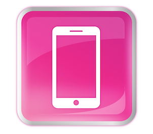
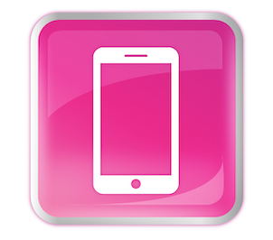

Jane Doe
 janedoe@example.com
|

(123) 456-7890
|
LinkedIn
janedoe@example.com
|

(123) 456-7890
|
LinkedIn
Portfolio: janedoe.dev | GitHub: github.com/janedoe
Objective
Enthusiastic front-end web developer student skilled in creating user-friendly, responsive websites. Seeking an internship to apply my skills and contribute to real-world projects.
Education
Bachelor of Science in Computer Science
Tech University | Expected Graduation: May 2026
- Relevant Courses: Web Development, Human-Computer Interaction, UX/UI Design, JavaScript Programming
- GPA: 3.9/4.0
Skills
- Programming Languages: HTML, CSS, JavaScript
- Frameworks: React, Bootstrap
- Tools: Git, Figma, VS Code
- Soft Skills: Collaboration, Problem Solving, Attention to Detail
Projects
Portfolio Website
Designed and developed a responsive personal portfolio using HTML, CSS, and JavaScript to showcase my projects and skills.
E-Commerce Website Mockup
Created a fully responsive e-commerce website prototype using React and Bootstrap, focusing on a seamless user experience.
Weather App
Built a weather forecasting application using JavaScript and OpenWeather API, displaying real-time weather data with a clean interface.
Experience
Web Development Intern
Innovative Web Solutions | June 2024 - August 2024
- Assisted in creating responsive website layouts for small business clients.
- Collaborated with designers to translate mockups into functional web pages.
- Performed debugging and testing to ensure cross-browser compatibility.
Extracurricular Activities
- Active Member, University Web Development Club
- Volunteer Mentor, Local Coding Bootcamp